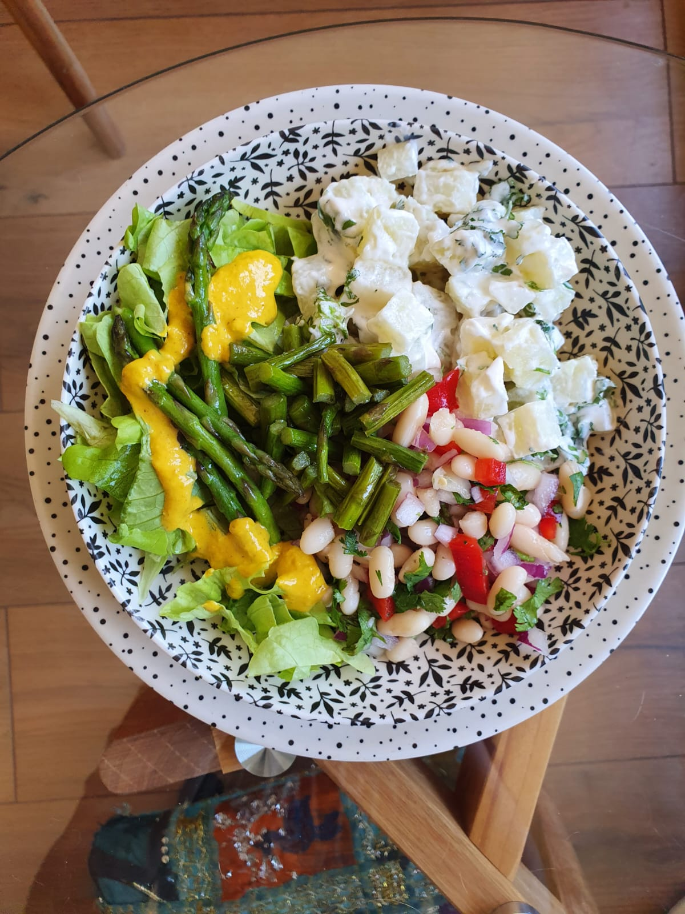

Ensalada de verano
Volver

No todas las ensaladas son fomes
Esta ensalada veraniega te hará darte cuenta de que los veganos no comen pasto, sino puras cosas ricas.
Ingredientes
- Lechuga
- Papas
- Mayo vegana
- Cilantro
- Porotos
- Pimentón
- Cebolla
- Espárragos
- Salsa de ají amarillo
Pasos
- Si tus porotos están crudos, cuécelos (recuerda que debes remojarlos una noche)
- Mientras se hace eso, pela, corta y hierve tus papas
- Salteamos mientras tanto nuestros espárragos con limón y sal. Si están duros, puedes ponerles un poco de agua para que se hiervan también.
- Aprovechamos este rato para cortar en pedacitos chiquitos nuestra cebolla, pimentón y cilantro
- Lavamos y cortamos la lechuga
- Una vez listo todo, mesclamos nuestros porotos con cebolla, pimentón, cilantro, limón y sal
- Preparamos unas papas mayo, también con cilantro
- Servimos todo sobre una cama de lechuga